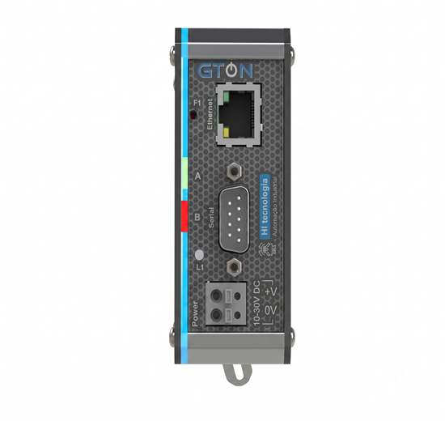
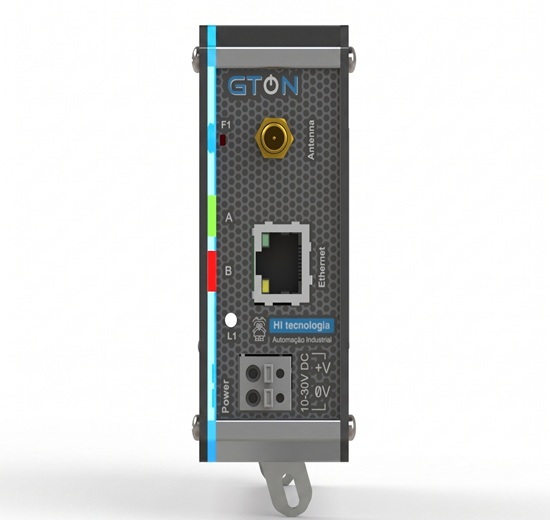
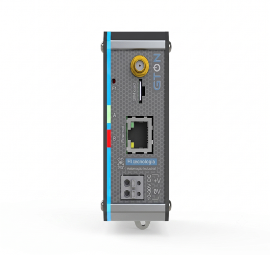
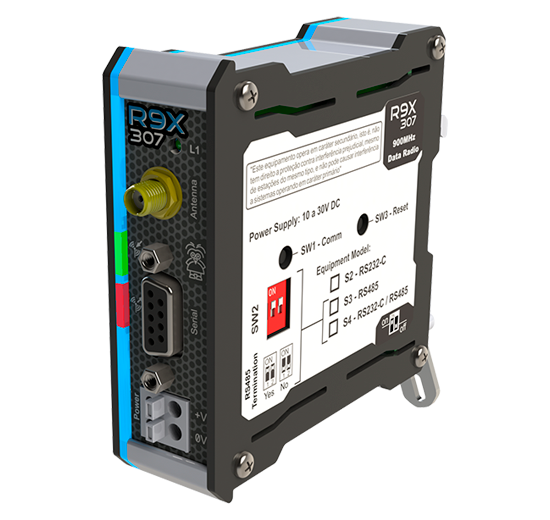

Traduzir redes, levar dados à internet e cobrir distâncias sem cabo, sem trocar o que o cliente já tem.
Na Etapa 3 você aprendeu a perceber quando falta um "tradutor". Agora conhece os produtos que resolvem cada caso: a linha GTON (GTON-C, GTON-P e GTON-M), o conversor USB721 e os rádios WSC720 (integrado) e R9X307. E aprende o passo a passo de uma venda de rádio, que sempre passa por um estudo de viabilidade.
Tempo estimado: 2h30 (leitura, quiz e preparo dos exercícios do encontro).
Um gateway recebe informações por uma interface de comunicação e as transmite por outra (Etapa 3). A HI tem uma linha de gateways chamada GTON, que cobre os cenários possíveis: trocar o meio físico, converter protocolo, programar e levar à internet. A família foi lançada em 2021.
| GTON-C | GTON-P | GTON-M | |
|---|---|---|---|
| Em uma frase | Conversor serial ↔ Ethernet e do protocolo Modbus | Gateway programável, com várias opções de interface | Modem industrial: recebe por Ethernet ou serial e repassa pela rede celular |
| Programável | Não | Sim (HIstudio) | Não |
| Interfaces | Serial (RS232 ou RS485) e Ethernet | Diversas combinações | Serial ou Ethernet, e celular 4G |
| Alimentação | DC (10 a 30 V DC) | DC (10 a 30 V DC) | DC (10 a 30 V DC) |
| SD Card | Não | Não | Não |
A letra depois de "GTON" diz o tipo: C de conversor, P de programável, M de modem. No Treinamento de Produto o GTON-C aparece como "GTON C SET": é o mesmo equipamento, e SET é a abreviação de Serial Ethernet. A mesma lógica aparece em outros códigos da HI, como S4E (Serial 485 Ethernet). Se o cliente citar um código assim, ele está dizendo quais interfaces o equipamento tem.
Antes da GTON, a HI tinha os modelos ESC, como o ESC717 e o ESC713. Eles são os antecessores dos GTON. Você pode encontrar ESC instalados em clientes antigos.
Se o cliente tem um ESC e quer trocar ou ampliar, não prometa que um GTON específico faz exatamente o mesmo papel: anote o modelo, o que ele faz hoje na instalação e confirme com o suporte qual GTON indicar. [CONFIRMAR] qual GTON corresponde a cada ESC (ESC717 e ESC713) e se os ESC ainda são vendidos
Fontes: Treinamento de Produto, p. 11 e 12; Catálogo Geral, p. 5, 16, 17 e 20; informações de Gabriel (05/11/2026) sobre a sigla SET, o padrão S4E e os ESC como antecessores dos GTON.

O GTON-C é conversor serial/Ethernet e bridge Modbus RTU/TCP num único equipamento. Trabalha de dois modos:
Só troca o meio físico: serial (RS232 ou RS485) ↔ Ethernet. Não mexe no conteúdo dos dados, então funciona com qualquer protocolo.
Exemplo
Uma impressora antiga com RS232 que precisa
receber dados pela rede Ethernet (em ASCII, por exemplo).
Pela Ethernet, em Modbus TCP, permite acessar equipamentos seriais que falam Modbus RTU, e vice-versa. Traduz o caminho e a versão do idioma.
Exemplo
Uma rede RS485 com equipamentos Modbus RTU lida
por um supervisório que só fala Modbus TCP.
No modo transparente, o GTON-C é um adaptador de tomada: muda o plugue, a energia é a mesma. No modo bridge, é o intérprete que ouve em "Modbus RTU" e repete em "Modbus TCP".
É o produto de quem diz "meus equipamentos são serial e o meu sistema é Ethernet". O argumento é aproveitar o que o cliente já tem: os equipamentos e o software continuam os mesmos; o GTON-C faz a ponte.
Fontes: Catálogo Geral, p. 17; Treinamento de Produto, p. 11 e 12.

O GTON-P tem a mesma capacidade de programação de um CLP e é programado no HIstudio (gratuito), em Ladder ou Texto Estruturado. Ele é montado com duas interfaces, escolhidas conforme a aplicação: serial, Ethernet, Wi-Fi, rádio ou modem 4G.
Fala os idiomas mais usados (Modbus, MQTT e ASCII). Um uso típico: buscar os dados de I/O remotos, inversores de frequência e medidores de energia numa rede RS485 e repassá-los por outra interface.
Se o GTON-C é o intérprete, o GTON-P é o assistente: ouve, organiza, faz as contas, decide o que é importante e só então repassa, no idioma e pelo caminho que o destino precisa.
Indique o GTON-P quando o cliente quer tratar os dados no caminho: fazer cálculos, guardar, filtrar, juntar dados de vários equipamentos ou converter para MQTT e mandar para uma plataforma na nuvem. Exemplo: ler escravos Modbus TCP pela Ethernet, calcular e enviar em MQTT pela rede 4G.
O GTON-P é programado: alguém precisa escrever o programa (a equipe do cliente, um integrador ou a engenharia da HI). Combine isso na proposta. E ele não tem SD Card.
Fontes: Catálogo Geral, p. 16 e 32; Treinamento de Produto, p. 11 e 12.

O GTON-M recebe informações por serial (RS232/RS485) ou Ethernet e dá acesso à internet de forma transparente pela rede 4G. Usa um chip de celular e uma antena, e é certificado pela Anatel.
É a resposta para "não quero usar a rede do meu cliente" ou "lá não tem internet". Ligado por Ethernet a um NEON5, por exemplo, o GTON-M leva os dados ao Portal de Telemetria sem passar pela rede do local. Complete a oferta com o chip e o plano de dados (HI Connect, a seguir) e a antena.
O HI Connect é o serviço de plano de dados celular da HI para aplicações IoT: chip e plano sem tempo mínimo de contrato, com a gestão do consumo feita pela HI. O chip é multioperadora (TIM e Vivo) e pode ser configurado para ficar sempre no melhor sinal. Há planos individuais (franquia fixa, bloqueada ao atingir o limite) e compartilhados (a franquia é dividida entre os chips do cliente). Com ele, a HI entrega a solução IoT completa: CLP, modem 4G, plataforma em nuvem e plano de dados. A mensalidade sai do orçamento do setor de vendas.
Antes de vender 4G, confirme se há sinal de celular no local. Sem sinal, nem o melhor modem resolve.
Fontes: Catálogo Geral, p. 20 e 38; Treinamento de Produto, p. 12.
Muitos computadores e notebooks só têm porta USB, e muitos equipamentos industriais só têm porta serial. O USB721 é o conversor USB ↔ serial RS232/RS485 da HI: permite que o computador acesse CLPs, inversores de frequência, transmissores e sensores seriais, sem alimentação externa.
É um item pequeno que costuma faltar no pedido: quando o técnico do cliente vai programar ou diagnosticar um equipamento serial com o notebook, ele precisa do USB721. Pergunte: "como o seu técnico vai se conectar ao equipamento em campo?"
Fontes: Catálogo Geral, p. 18; Treinamento de Produto, p. 13.
Rádios são conversores de meio físico: recebem dados por serial ou Ethernet e transmitem sem fio (e o caminho inverso). Eles só repassam os dados, sem mexer no idioma. E nunca funcionam sozinhos: é sempre um rádio enviando para outro, vários para um ou vários para vários.
Vem dentro dos CLPs e gateways que têm a opção de rádio. Indicado para distâncias menores: cerca de 3 km ao ar livre e 150 m em ambiente interno.
Equipamento à parte (não é nativo aos CLPs), com rádio 900 MHz e serial RS232/RS485. Indicado para distâncias maiores: a HI recomenda até 60 km em área rural e cerca de 18 km em área urbana, sempre com visada.

O WSC720 é o walkie-talkie que já vem no bolso do uniforme: prático para falar no mesmo terreno. O R9X307 é a estação de rádio com antena no alto: alcança bem mais longe, mas é um equipamento a mais e precisa de planejamento.
Os alcances são de referência e dependem de visada (uma antena enxergar a outra) e da instalação. A tabela técnica do Treinamento mostra valores maiores para o R9X307, mas a recomendação da HI é até 60 km. Nunca prometa alcance sem o estudo de viabilidade.
Fontes: Treinamento de Produto, p. 14 e 15; Catálogo Geral, p. 22; recomendação de 60 km confirmada por Gabriel (05/11/2026).
Por que o estudo? Morros, prédios e árvores bloqueiam o sinal. Com as coordenadas, o suporte técnico ou a engenharia de aplicação da HI verifica o relevo entre os pontos (altimetria) e diz se há visada, que rádio usar e se é preciso, por exemplo, um ponto intermediário.
Transforme o estudo em argumento: "antes de vender, a nossa equipe técnica confirma se o seu enlace funciona". Isso passa segurança e evita a pior venda possível: a que não funciona no campo. O pedido do arquivo KML também mostra que o cliente está engajado.
Não pule o passo 3, nem com cliente apressado. Sem estudo, não há promessa de alcance.
Fontes: Treinamento de Produto, p. 16. "Ponto intermediário" é exemplo geral de solução para falta de visada; quem decide é quem faz o estudo. Estudo pelo suporte técnico ou pela engenharia de aplicação: orientação de Gabriel (05/11/2026), por cima do Treinamento, que cita a Engenharia de Produto.
| O cliente diz… | Produto provável | O que anotar e confirmar |
|---|---|---|
| "Tenho 25 equipamentos Modbus RTU numa RS485 e quero ler no meu supervisório pela Ethernet (Modbus TCP)." | GTON-C, modo bridge | Quantidade de equipamentos, protocolo, software. |
| "Minha impressora antiga é RS232 e quero mandar dados pela rede." | GTON-C, modo transparente | Porta da impressora e protocolo (normalmente ASCII). |
| "Quero ler escravos Modbus, fazer contas e mandar em MQTT para a nuvem pelo 4G." | GTON-P (interfaces Ethernet + 4G) e chip/plano | Quem vai programar; plataforma de destino; sinal de celular. |
| "Meu CLP já manda para o Portal pela Ethernet, mas não quero usar a rede do cliente." | GTON-M, chip e plano (HI Connect), antena | Sinal de celular no local. |
| "O técnico precisa ligar o notebook no equipamento serial." | USB721 | RS232 ou RS485. |
| "Dois CLPs a 1 km, no mesmo terreno aberto." | CLPs com rádio integrado (WSC720) | Visada; coordenadas para confirmar. |
| "Reservatórios a 25 km da estação, em área rural." | R9X307 | KML para o estudo de altimetria. |
Gateways e rádios trocam caminhos e idiomas; eles não leem sensores. Se o cliente quer ler sinais 4 a 20 mA ou liga/desliga, quem lê é um CLP (Etapa 4), que pode ter rádio ou 4G integrado.
Fontes: Catálogo Geral, p. 7, 8, 16 a 22 e 38; Treinamento de Produto, p. 11 a 16; exercícios 14, 17, 19 e 21 do Treinamento de Produto (situações).
| O cliente pergunta | Como responder |
|---|---|
| "Vou ter que trocar meus equipamentos para ligar na rede?" | Na maioria dos casos, não: um gateway faz a ponte entre o que já existe e o sistema novo. Anote portas e protocolos para o suporte confirmar. |
| "Qual a diferença entre GTON-C e GTON-P?" | O GTON-C converte (meio físico e Modbus RTU/TCP). O GTON-P é programável: trata os dados antes de repassar. |
| "Qual o alcance do rádio?" | O integrado é para distâncias menores (cerca de 3 km ao ar livre); o R9X307, para maiores, com recomendação de até 60 km. Mas o alcance real só o estudo de visada confirma, com as coordenadas e o estudo de visada. |
| "Tenho um ESC antigo. O que coloco no lugar?" | Os ESC são os antecessores dos GTON. Anote o modelo e o que ele faz hoje; o suporte indica o GTON equivalente. |
| "Vocês fornecem o chip?" | Sim, com o HI Connect: chip multioperadora e plano de dados, sem tempo mínimo de contrato. Valores pelo orçamento. |
Confira o que ficou. A correção é na hora, com a explicação de cada resposta. Acerte pelo menos 80% antes de marcar a etapa como concluída.
Traga preparado (para cada caso, o produto, por quê, e o que confirmaria com o suporte ou a engenharia de aplicação):
Casos adaptados dos exercícios 5, 14, 15, 17, 18, 19 e 21 do Treinamento de Produto.